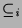
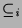

The relationship between three-valued models and  /
/ is similar to the relationship between two-valued models and
is similar to the relationship between two-valued models and  :
:
The relationship between least fixpoints, minimal models and success
set is more complex than the two-valued case since there are multiple
partial orders of interest and multiple minimal models by some measures.
However, nearly all minimal models we have considered bear strong
relationships with the success set  (the least fixpoint of
(the least fixpoint of  and least two-valued model). The union of true and inadmissible atoms in
models which minimise
and least two-valued model). The union of true and inadmissible atoms in
models which minimise  or
or  (or ) is
(or ) is  . These models
are least fixpoints of
. These models
are least fixpoints of  where
where  is fixed to a suitable value
(such as
is fixed to a suitable value
(such as  or
or  ). For  the minimum strong model
has
). For  the minimum strong model
has  as the true atoms and this is the least fixpoint of
as the true atoms and this is the least fixpoint of  .
.
The main theorem we have concerns soundness for admissible atoms. A successful atom may not be true, since inadmissible atoms can succeed. However, an admissible atom which succeeds must be true if the intended interpretation is a model.
A form of completeness is inherited from the two-valued case:
This result is not really useful in practice for several reasons, which we discuss in Section 5.4.